Restaurant POS Guide
One system for the whole restaurant: tables, orders, kitchen tickets, bills, payments, khata, the cash drawer, stock and day-end reports. This guide follows a normal day, then covers the owner's setup and the safety rules built into the system.
What it is
Staff use it on a tablet, phone or counter PC through a web browser. The captain takes the order at the table, the kitchen printer prints the ticket, the cashier makes the bill and takes payment, and the owner sees the figures. Every device shows the same live picture: when one tablet opens a table, the others show it within a few seconds.
| It does | It guarantees |
|---|---|
| Tables, dine-in, takeaway and delivery orders | Money is counted in exact paisa. Nothing is rounded by guesswork. |
| Kitchen tickets per station (BBQ, Karahi, Tandoor…) | Bills and payments are never edited or deleted. Mistakes are fixed with a refund note that stays on record. |
| Bills, discounts, cash, card, wallets, split payments, khata | Every sensitive action (discount, void, refund, reprint, drawer open) needs permission, a reason, and is logged with who did it. |
| Cash drawer, shift close with cash count, day close | Taking an order, printing the kitchen ticket and printing the bill work without internet, on your own network. |
| Stock, purchases, recipes, expenses, food cost | The same payment cannot be charged twice, even if the tablet loses signal during payment. |
| Urdu and English screens, Urdu receipts | Tax stays off until your accountant enters the rates. The system contains no tax rates of its own. |
Who does what
Each person signs in with their own username and a 4 to 8 digit PIN. What they can see and do depends on their role. The buttons they are not allowed to use are not shown, and the server refuses the action even if someone tries another way.
| Role | Typical work |
|---|---|
| Owner | Everything, including the dashboard, menu, prices, users, roles, tax and settings. |
| Manager | Starts and closes the day, approves large discounts, cancels bills, handles refunds, creates khata accounts, checks the dashboard and reports. |
| Cashier | Opens a shift, takes orders and payments, uses the cash drawer, receives khata payments, closes the shift. |
| Captain / waiter | Takes and sends orders, moves a party to another table. Cannot cancel an order. |
| Kitchen | Sees the kitchen screen and moves tickets to Cooking and Ready. |
| Store, accountant | Stock and purchasing, and the figures. Their exact rights are set by the owner. |
A day in the system
1. Sign in
Type your username, then your PIN on the number pad, and press Sign in. After a few wrong PINs the account locks for a short time, so nobody can guess a PIN.
The اردو button switches the whole app to Urdu. Your choice is remembered on that device.
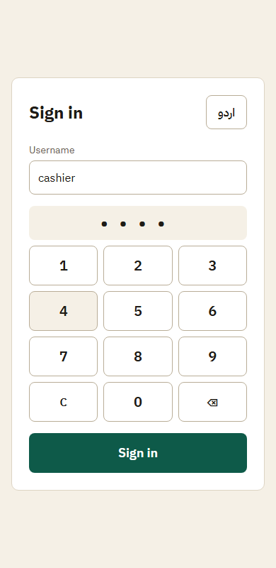
2. Start the day and the shift
A business day is the trading day that all sales are filed under, even if you close after midnight. A shift is one cashier's time on the till, with their own cash drawer count. Orders cannot be taken until a day is open.
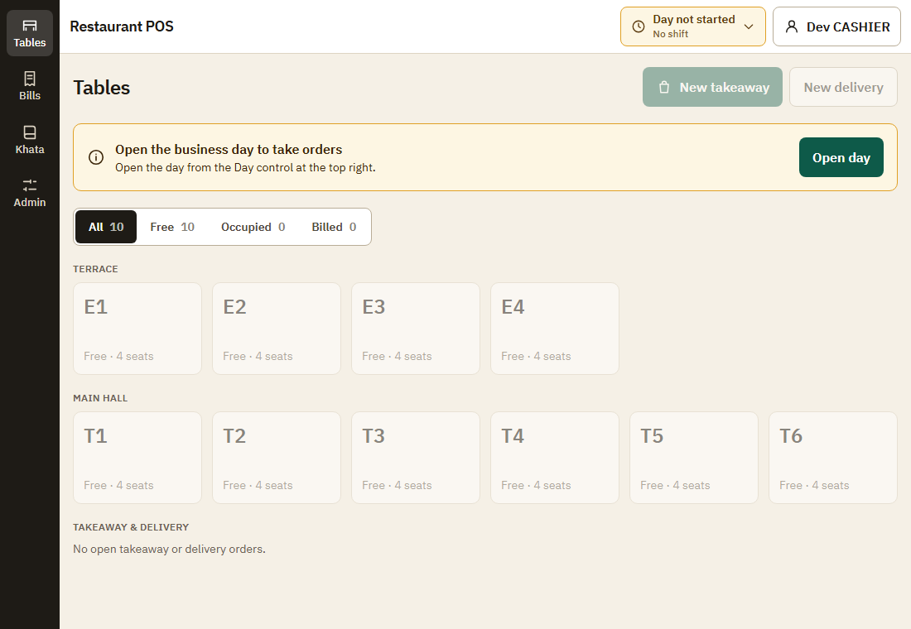
The pill at the top right is the only place for day and shift. It always shows where you are, turns yellow when a step is missing, and its menu offers exactly the next step.
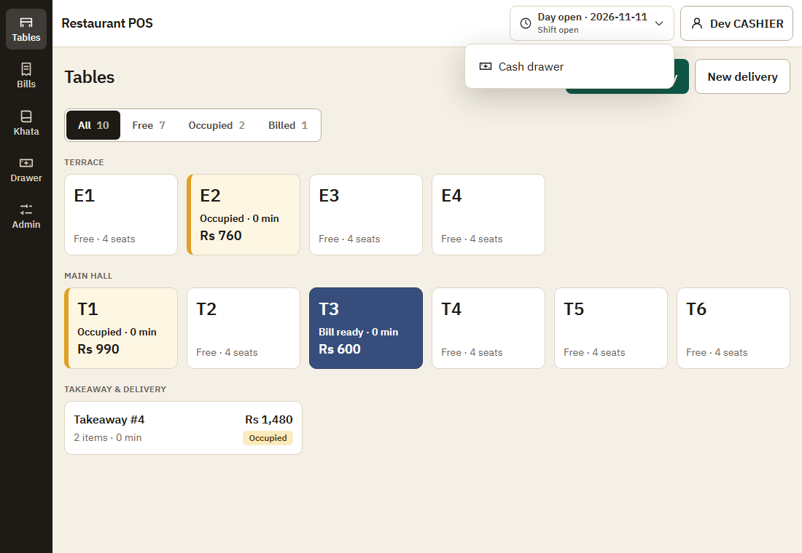
3. The Tables screen
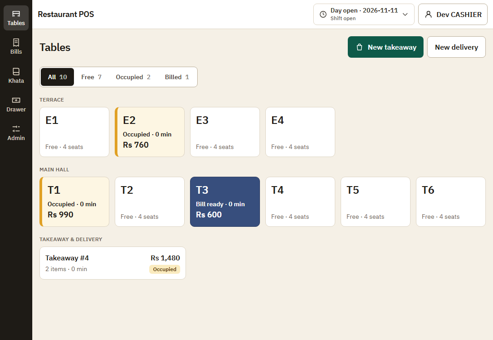
- White tile: free table. Tap it to start an order.
- Yellow tile with a bar: guests are eating. It shows how long it has been open and the running amount.
- Dark blue tile: the bill is ready and waiting for payment.
- The filter above the tables (All / Free / Occupied / Billed) shows how many tables are in each state.
- Takeaway & delivery orders are listed under the tables, so you can always come back to one.
4. Take the order
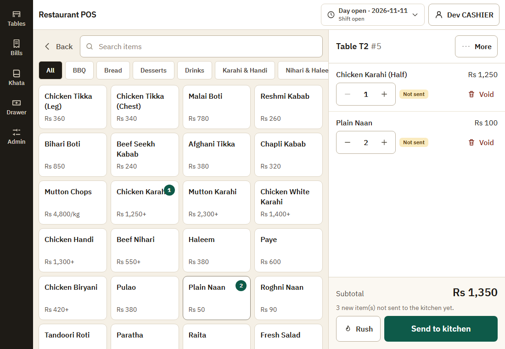
- Find the dish. Use the category tabs (BBQ, Bread, Karahi…) or the search box. Search works in English and Urdu.
- Tap to add. Tapping the same dish again adds one more to the same line. The green number on a dish shows how many are in the order.
- Dishes with choices open a small window: half or full, spice level, extras, a weight in grams for items sold by the kilo, or the options of a deal. Required choices are marked Required. You can add a note for the kitchen.
- Check the order. Each line says Not sent or In kitchen. Use − and + to change a quantity before sending.
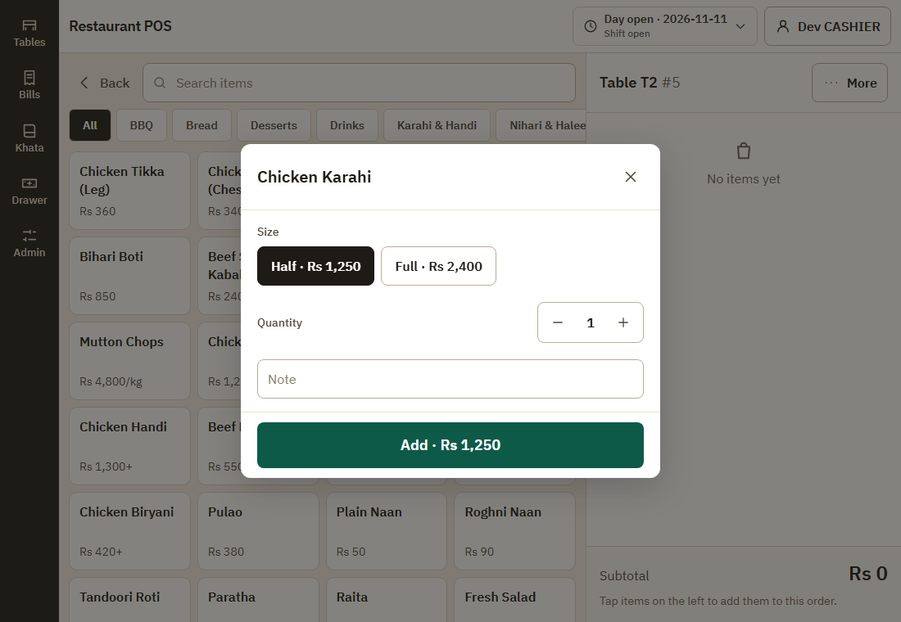
5. Send to kitchen
The big green button at the bottom is always the next step, and the line above it tells you why. With new items it is Send to kitchen. The system prints one ticket per station, so the tandoor and the karahi section each get only their own dishes. A short message confirms where the tickets went.
- Rush marks the ticket as urgent.
- If a station has no printer, the order is still saved and you are told which station was not printed.
- Once sent, a line cannot simply be removed. Voiding a sent dish asks for a reason and is recorded.
- More dishes can be added and sent at any time, as many times as the guests order.
6. Hold, move, merge, cancel
These are rare, so they sit under More at the top of the order.
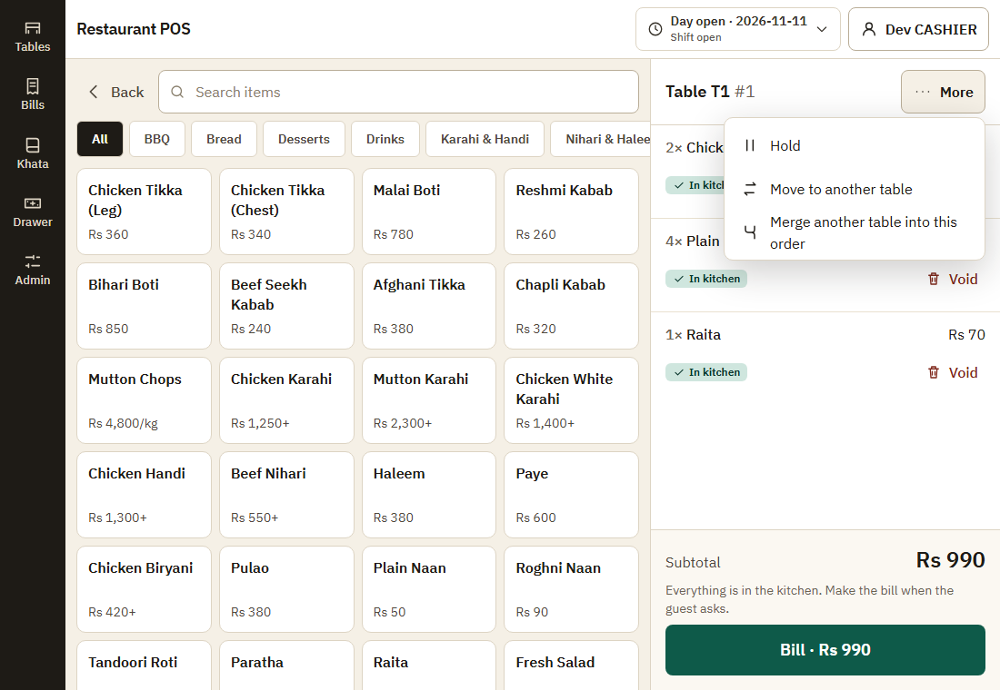
- Hold: pause the order. Resume it later from the same menu.
- Move to another table: pick a free table; the whole order moves.
- Merge: add another table's order into this one (two parties paying together).
- Cancel order: only possible while nothing has gone to the kitchen, and needs a reason. Captains do not see it.
Where the order goes: the kitchen
When the waiter presses Send to kitchen, three things happen at once: the order is saved, the table turns yellow on every screen, and the kitchen is told.
- A ticket prints at each station. The tandoor gets only the roti and naan, the BBQ section only the tikka, the karahi section only the karahi. A rush order is marked on the ticket.
- The same ticket appears on the kitchen screen. Open Kitchen on a tablet fixed in the kitchen. Tickets sit in three columns: New, Cooking and Ready. Each ticket shows the table, the dishes with quantity, extras and notes, the captain's name, and how many minutes it has waited. After 10 minutes the timer turns yellow, after 20 it turns red and blinks.
- The cook taps one button. Start cooking, then Ready. A small arrow undoes a wrong tap. The screen beeps when a new ticket arrives (the sound can be switched off), and cooks can show one station only.
- The waiter is told. The moment a ticket is Ready, that table shows Food ready and blinks on every waiter's screen. The waiter carries the food over and taps Served.
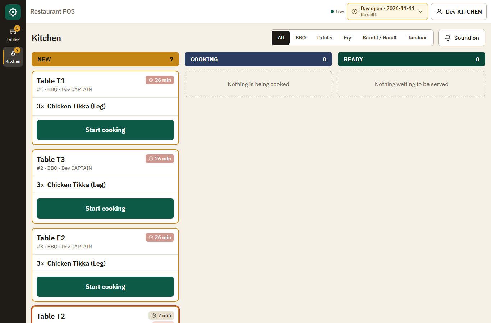
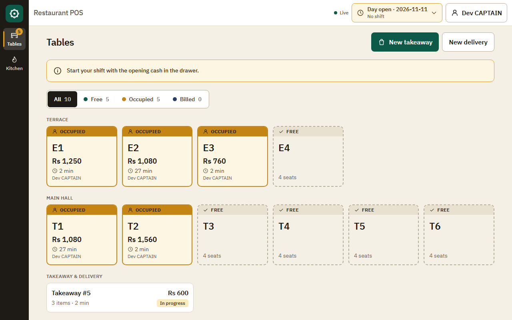
- If a dish is voided after it was sent, the ticket shows it struck through with Cancelled, and a cancel slip prints at the station.
- If a printer is off, the ticket still shows on the kitchen screen, so cooking does not stop.
- A kitchen login opens directly on this screen. Kitchen staff can see and move tickets. Waiters and cashiers can see them and mark food served.
- The screen shows today's tickets only, plus tickets served in the last 30 minutes, which can be put back with Undo.
7. Make the bill
When every item is in the kitchen, the green button becomes Bill · Rs …. While something is still unsent, the Bill button does not appear, so the kitchen and the bill never disagree.
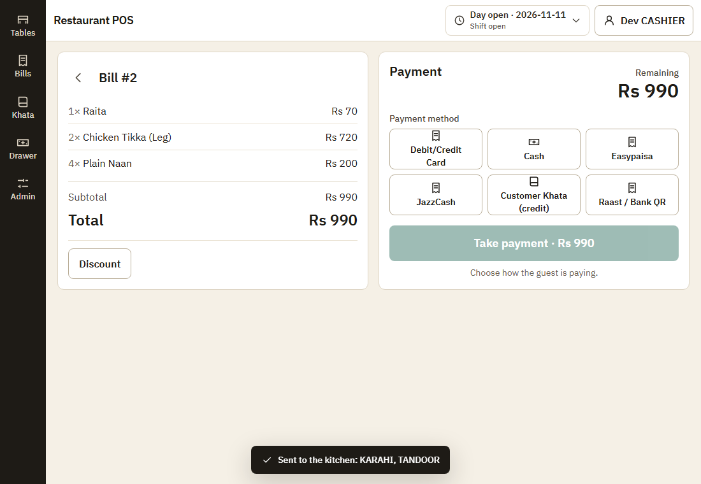
The bill shows identical dishes together, then subtotal, discount, service charge, tax (when it is switched on) and the total. All amounts come from the server. The screen never works out money on its own.
8. Discounts
Discount opens a small window: choose 5, 10, 15 or 20 percent and write the reason. A reason is always required.
Each role has a limit. A cashier can give 10 percent alone. Above the limit the screen asks for a manager's username and PIN, so the manager approves it on the spot without taking over the till. A wrong PIN is refused.
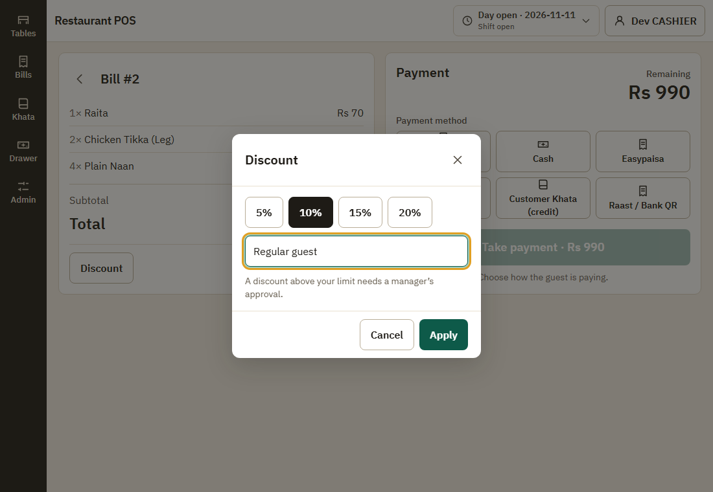
9. Take payment
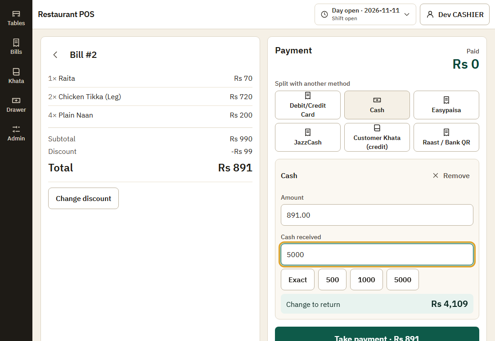
- Tap a payment method tile: Cash, card, Easypaisa, JazzCash, bank QR, or Customer Khata. The amount is filled in for you.
- Split payment: add a second method. For example Rs 1,000 cash and the rest on card. The Remaining amount at the top counts down to zero.
- Card and wallet payments need a reference (the slip or transaction number).
- If something is missing, the sentence under the button says exactly what, for example "Rs 500 still to be covered by a payment". The button Take payment · Rs … turns on when everything is right.
- Pressing the button twice, or a retry after the network drops, cannot charge the guest twice.
10. Paid
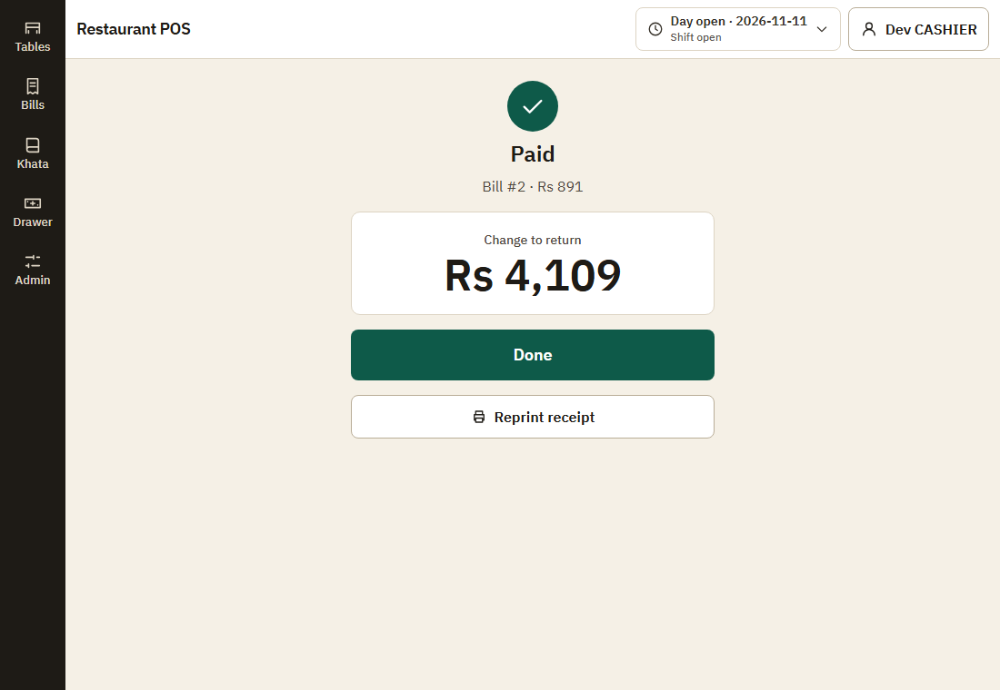
The paid screen shows the change to return in large type. The receipt prints, and the cash drawer opens for cash. The table becomes free on the Tables screen.
Reprint sends the receipt again. This is a sensitive action: it needs permission and is logged. Done returns to the tables.
Khata (credit customers)
Regular customers who pay later get a khata account with a credit limit. This is a real ledger, not a note.
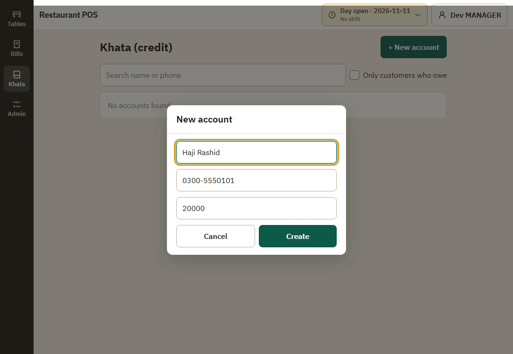
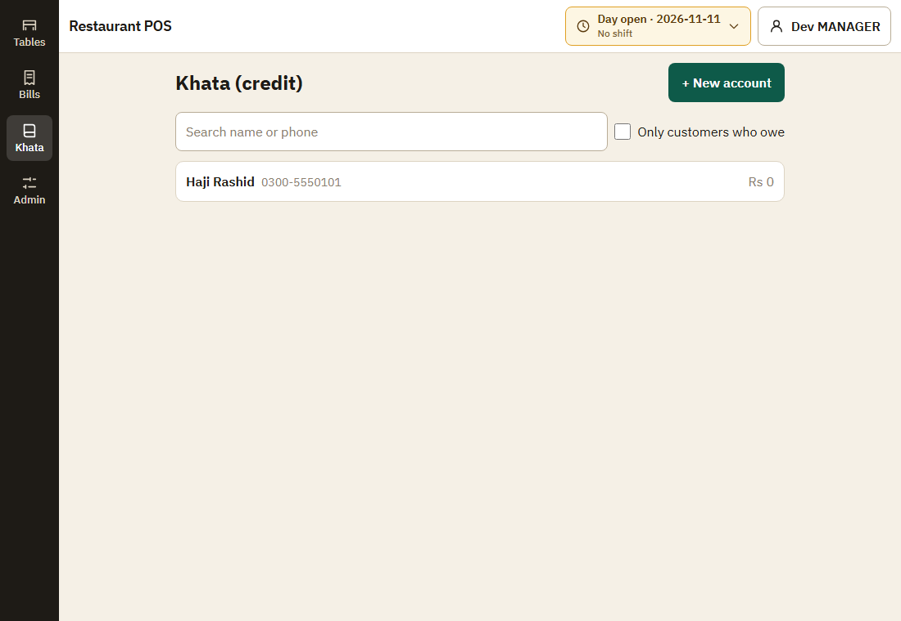
- At payment, choose Customer Khata and pick the customer. The amount is added to what they owe.
- If the sale would take them over their limit, the system refuses it and shows how much credit is left. This cannot be skipped.
- When the customer pays, open Khata, choose the account and record the payment. The ledger shows every sale and payment in order.
- Entries are never edited. A correction is a new entry.
Old bills, refunds and corrections
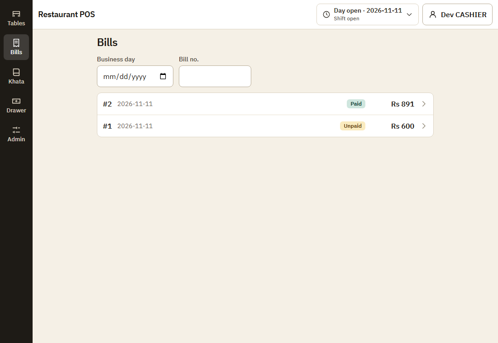
A paid bill is final. It cannot be edited or deleted. This protects you from missing money and from disputes.
| Situation | What to do |
|---|---|
| Bill made by mistake, not yet paid | Open it and press Cancel bill (manager). A reason is required. The order opens again so it can be corrected and re-billed. |
| Guest returns a dish after paying | Open the paid bill, press the refund button, choose the dish and give a reason. The system creates a credit note, pays the money back, and reverses the tax on those items. The original bill stays untouched. |
| Guest wants a second copy | Reprint on the paid screen. It is logged. |
Cash drawer, shift and day close
Press Drawer in the left menu.
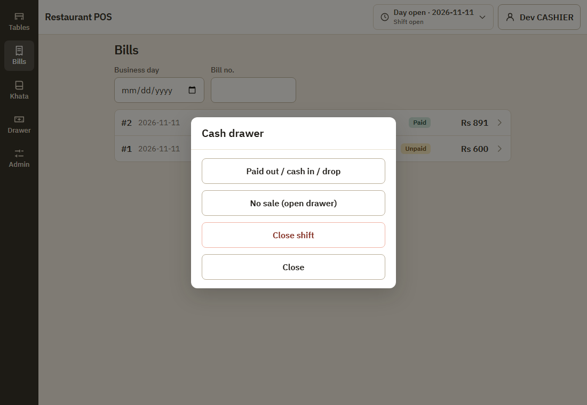
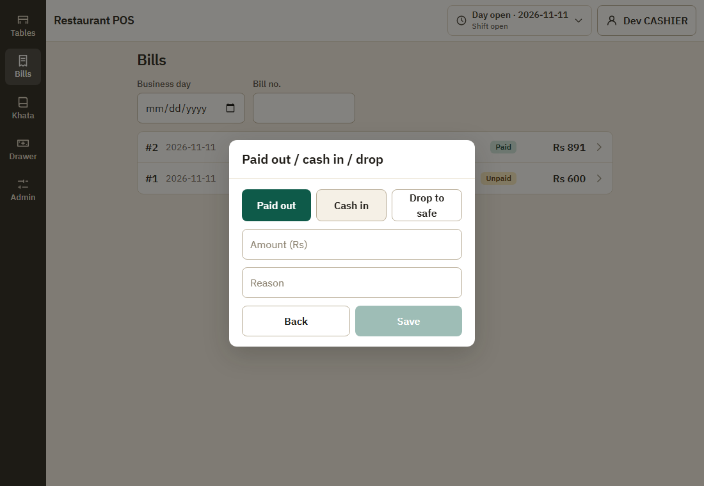
- Paid out: cash taken out for an expense (gas, vegetables). Amount and reason are required.
- Cash in: cash added to the drawer. Drop: extra cash moved to the safe.
- No sale: opens the drawer without a sale. A reason is required and it is logged, so nobody can open the drawer unseen.
- Close shift: the cashier counts the cash and enters it. The system compares it with what it expects and prints a slip. A difference needs a short note. Closing a shift is the end of that cashier's responsibility.
- Close day (manager): ends the trading day and produces the day report with sales, payment methods, cash differences and tax. If orders are still open, the system lists them (for example "#12, #15") and refuses to close until they are paid or cancelled. Nothing is left behind silently.
Owner dashboard
The Dashboard button (first in the left menu, for the owner, manager and accountant) answers the questions an owner asks every evening: how much did we sell, what did it cost, what did we keep, and is anything leaking? Everything is calculated from paid bills and recorded entries. Nothing on this page can be edited.
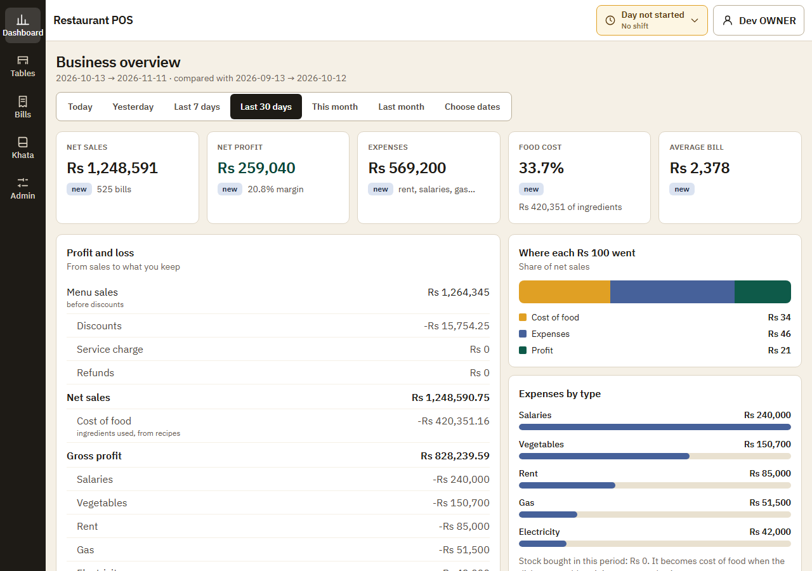
The five headline numbers
| Number | What it means |
|---|---|
| Net sales | Menu sales minus discounts, plus service charge, minus refunds. Tax is not included because it belongs to the authority. |
| Net profit | What is left after the cost of food and every expense you entered. The margin shows it as a percentage of sales. |
| Expenses | Rent, salaries, gas, vegetables and other costs entered under Admin → Costs. |
| Food cost | The cost of the ingredients in the dishes sold, as a share of net sales. Many restaurants aim for roughly 28 to 35 percent. Use your own history as the real benchmark. |
| Average bill | Sales per bill, and per guest when the number of guests is entered. |
The green or red tag beside each number shows the change against the previous period. For costs, a rise is shown in red.
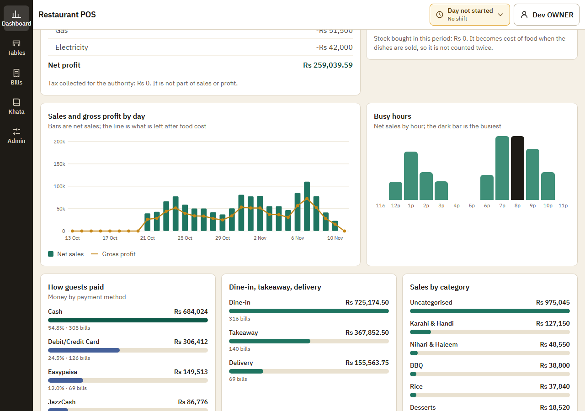
Profit and loss, line by line
- Menu sales before discounts, then discounts, service charge and refunds, which gives net sales.
- Cost of food, worked out from each dish's recipe and the average price you paid for the ingredients, which gives gross profit.
- Each expense type listed separately, which gives net profit.
- Where each Rs 100 went shows the same thing as one bar: food, expenses, and what you keep.
- Stock bought is shown as information only. It is not counted as an expense, because the cost is counted when the dishes are sold. Otherwise the same money would be counted twice.
How guests paid, and what sells
- How guests paid: cash, each card and wallet, and credit (khata), with each one's share. Cash is counted separately from card and wallets, so you can match the money in your hand with the bank.
- Dine-in, takeaway and delivery, and sales by category.
- Best sellers with the margin of each dish, so you can see which dishes earn money and not only which ones sell. Slowest movers are candidates for a promotion or for removal.
- Busy hours shows when to staff up and when to prepare.
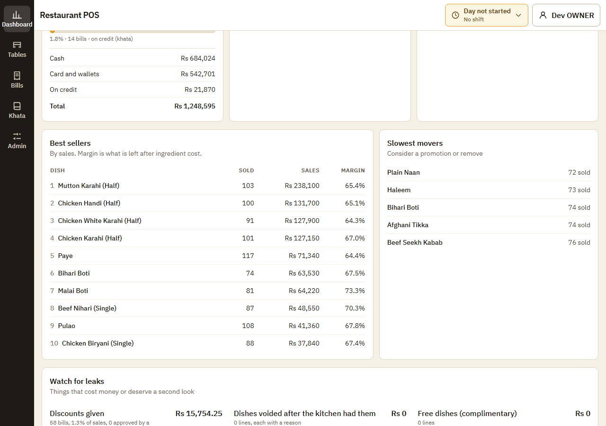
Watch for leaks
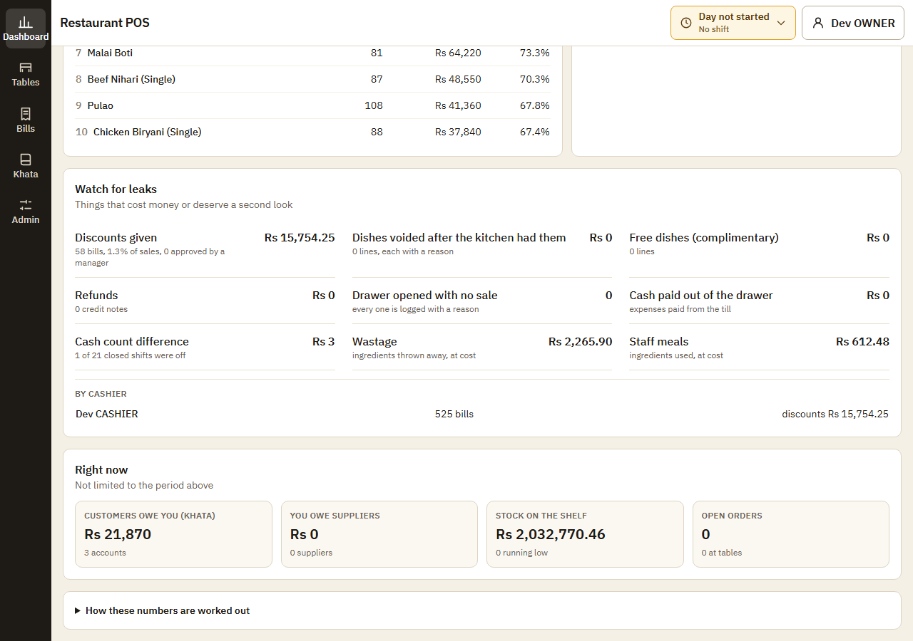
These are the places where money quietly disappears. Each one is counted from the logged actions, and yellow or red tags mark what deserves a look.
| Check | Why it matters |
|---|---|
| Discounts given | Total, share of sales, and how many a manager approved. A high share, or one cashier giving most of them, is worth a conversation. |
| Dishes voided after the kitchen had them | Food that was cooked and not paid for. Each one has a reason on record. |
| Free dishes and refunds | Complimentary items and money returned to guests. |
| Drawer opened with no sale | Every one is logged. Many in a day is a warning sign. |
| Cash count difference | How many closed shifts did not match the count, and by how much. A shortage is marked. |
| Wastage and staff meals | Ingredients thrown away or used for staff, valued at cost. |
| By cashier | Bills and discounts per person. |
Kitchen speed
How long food takes, measured from the kitchen screen: waiting (sent until the cook taps Start), cooking (Start until Ready) and the typical time from sent to ready. You also see the slowest 1 in 10, the share ready within 15 minutes, the average per station (BBQ, Tandoor…), and a chart by hour so you can see which rush hour is too slow. Tickets nobody marked ready are not counted; the page tells you how many were left out. For real numbers, ask the kitchen to tap Start and Ready on the Kitchen screen.
Right now
These do not depend on the period: what customers owe you in khata, what you owe suppliers, the value of stock on the shelf, ingredients running low (with a reorder list), and how many orders and tables are open at this moment.
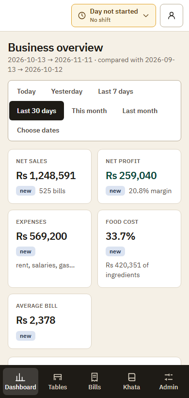
The figures refresh by themselves every minute, so the dashboard can stay open on a screen in the office.
Owner setup (Admin)
The Admin area has its own menu on the left, grouped by job. Each person sees only the parts they are allowed to use.
Menu and tables
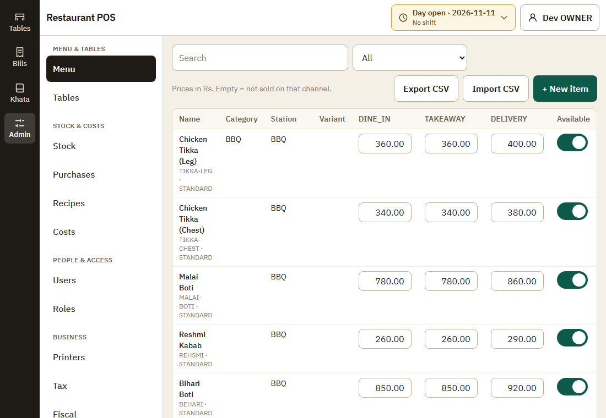
- Edit a price: type it and press Enter. Old bills keep the price they were sold at.
- Available switch: turn a dish off when it is finished (it shows "Sold out" at the till).
- New item: name in English and Urdu, kitchen station, variants (half/full), prices per channel.
- Import / Export CSV: load a whole menu from Excel. The check step lists every problem by line number before anything is applied.
- Tables: add areas (Main Hall, Terrace) and tables. A new table appears on the floor straight away.
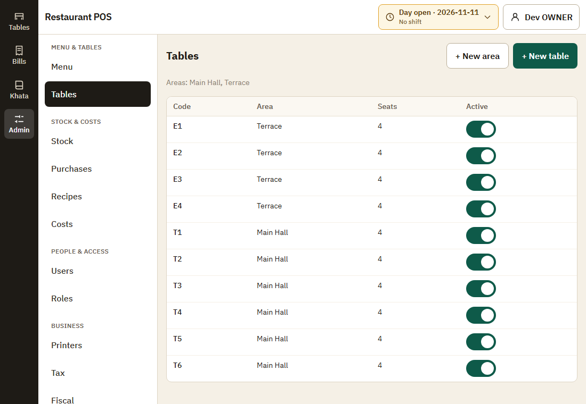
Help on every screen
The Help button in the top bar explains the screen you are on: what it is for, the steps to follow and a few tips, in English or Urdu. The left menu also says in a few words what each place is for (for example Khata: credit customers, Drawer: cash in / out, close shift). On the order screen three steps above the cart show where you are: Add items → Send to kitchen → Bill & pay.
Setup checklist
Admin → Business → Setup lists what a restaurant needs before the first sale: restaurant details, tables, a menu with prices, printers, staff and payment methods, and starting the day. Each step shows Done or a Set up button that takes you to the right screen. Until everything is done, the Tables screen shows a short reminder to the owner. It never stops you from selling.
Day summary on WhatsApp
When you close the day, and from the Dashboard (Share summary, for Today or Yesterday), the system writes the day as a short message: sales, how guests paid, food cost, expenses, net profit, discounts, cash difference, best sellers and what needs attention. Tap Send to the owner's WhatsApp and WhatsApp opens with the message ready; you press Send. Enter the owner's number once in Admin → Settings → Reports. Nothing is sent by the till itself.
Popular dishes while ordering
On the order screen a Popular tab lists the dishes sold most in the last two weeks, so the usual orders are one tap away.
QR menu for guests
Put a QR code on every table. A guest scans it with the phone camera and sees today's menu and prices, in English or Urdu, with the dishes that are finished marked "Sold out". No app, no sign-in, and guests can only read the menu: they cannot order or see anything else.
- Open Admin → QR menu and switch Customers can see the menu on. It is off until you do.
- Address: the QR must point to an address the guest's phone can reach. On the restaurant Wi-Fi that is the till computer's network address (for example
http://192.168.1.10). "localhost" will not work on a phone; the page warns you. - Note for today: one or two lines at the top of the menu (today's special, "fresh naan after 7 pm").
- Print poster gives one sheet for the table (A5 or A4); Download image gives the QR as a picture, for WhatsApp or a sign-maker.
- Describe each dish (optional): open a dish in Admin → Menu and fill the Guest menu box. Add a short description in English and Urdu, labels (Halal, Vegetarian, Spicy, Chef's pick, New), the allergens it contains (milk, gluten, nuts…), and a photo. A phone photo is fine: it is shrunk automatically.
- Hide a dish from guests: switch on Hide from the guest menu for staff meals or off-menu items. It is still sold at the till; the Menu list shows a "Hidden from guests" tag.
- Allergens are shown only as "Contains: …". The system never says a dish is "free from" something, and the page asks guests to check with staff about allergies.
- The menu follows the till: change a price or mark a dish unavailable and guests see it within a minute. Switch the menu off and the QR shows "menu not available".
People and access
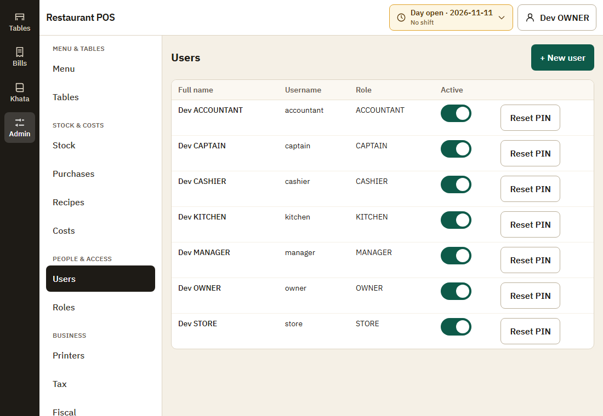
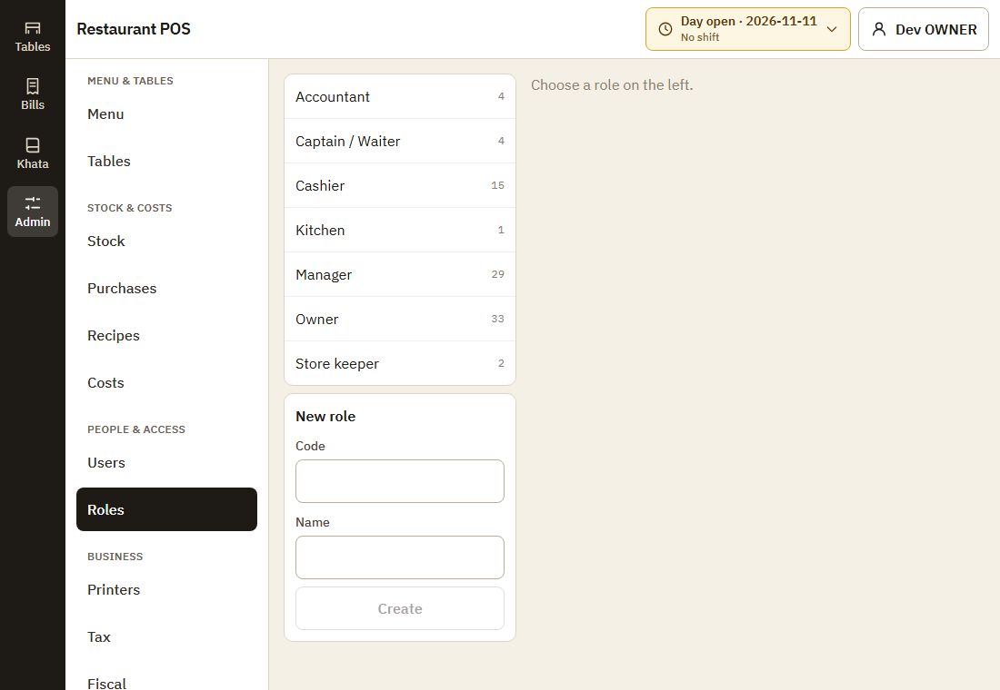
Printers and settings
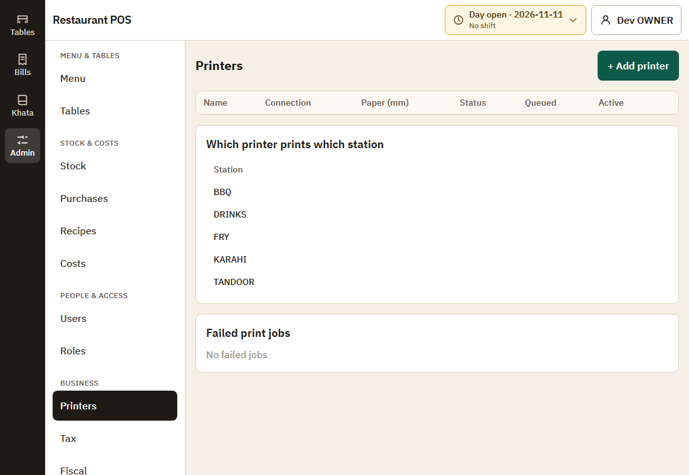
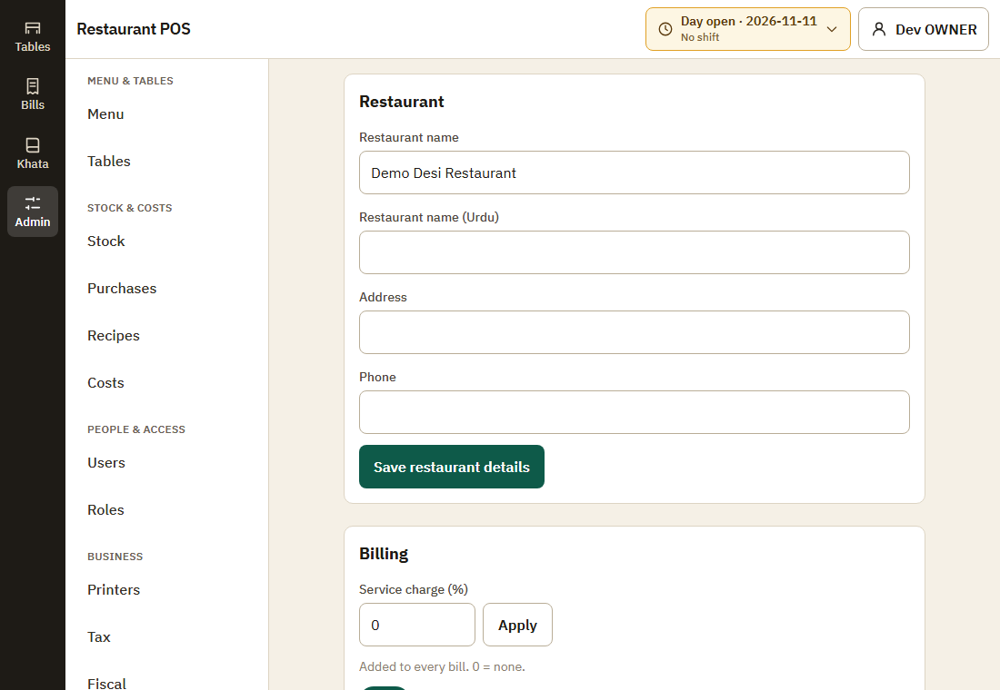
If the receipt language is set to Urdu, the receipt is drawn as a picture so any thermal printer prints proper Urdu.
Stock, purchases, recipes and costs
This part is optional but gives the owner true food cost.
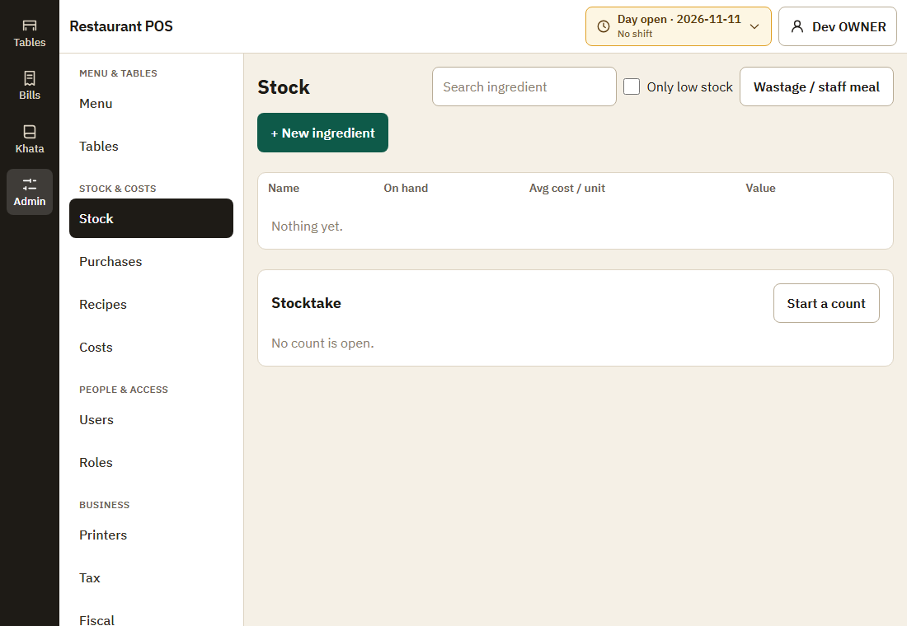
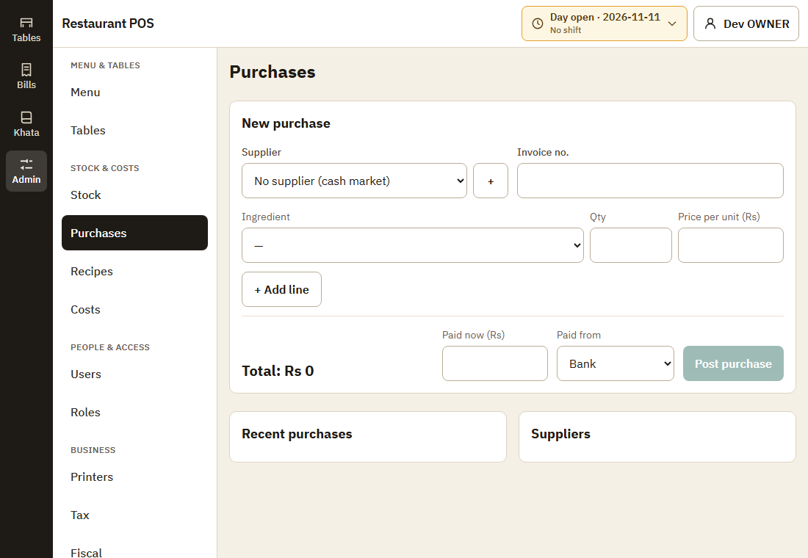
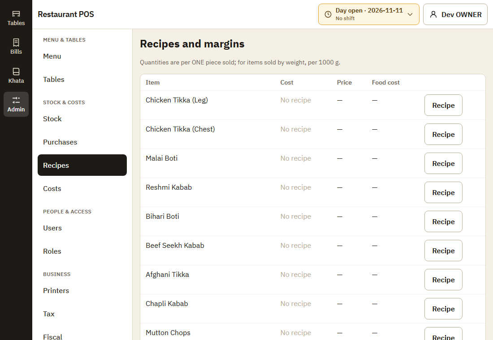
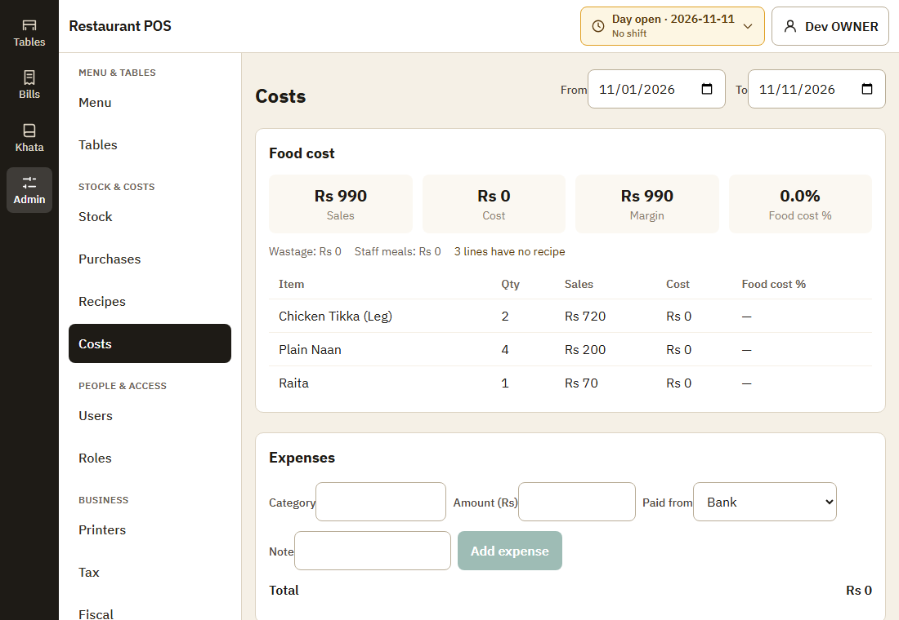
- Stock is reduced when a bill is paid, using the recipe. If you sell something before the delivery is entered, stock may show a minus number. Sales are never blocked.
- A stock count compares the shelf with the system and turns each difference into a recorded adjustment.
- Purchases cannot be edited afterwards. Mistakes are corrected by a new entry.
Tax
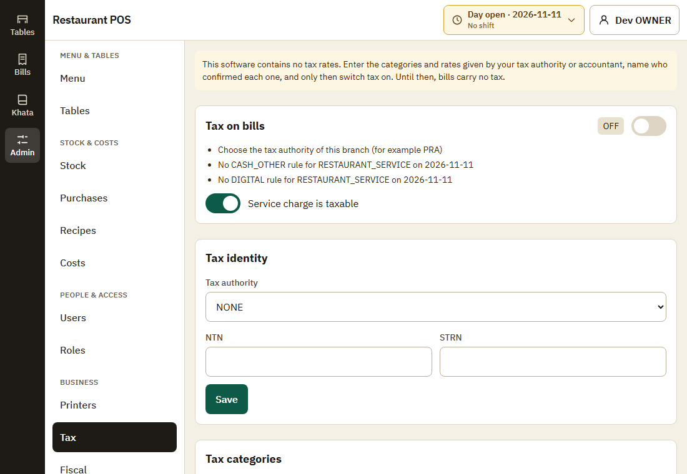
- The owner or accountant enters the tax authority, NTN/STRN, the tax categories, and the rates with the date they start. Rates can differ for cash and for card or wallet payments.
- For each rate, the person who confirmed it is recorded. The switch cannot be turned on while anything is missing, and the page lists exactly what is missing.
- Tax is worked out when the bill is paid, using the rule that applies on that date and for that payment type. A past bill never changes when a rate changes later.
- Refunds reverse tax at the same rate the original bill used.
Fiscal reporting
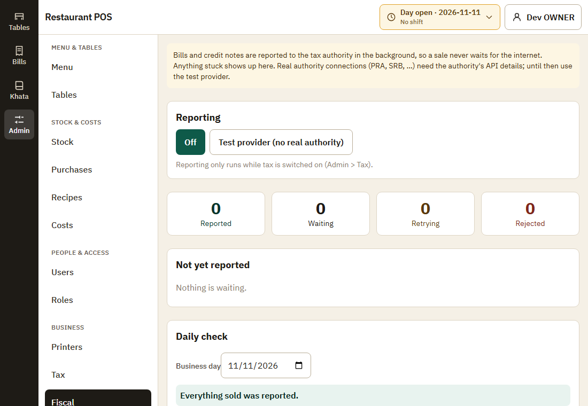
Where the tax authority requires invoices to be reported online, each paid bill is queued and sent in the background. The cashier is never kept waiting, and the bill shows fiscal invoice: pending until the number arrives. If the internet is down, reports wait and retry. A reconciliation view shows anything that was refused or is stuck.
Urdu and other screen sizes
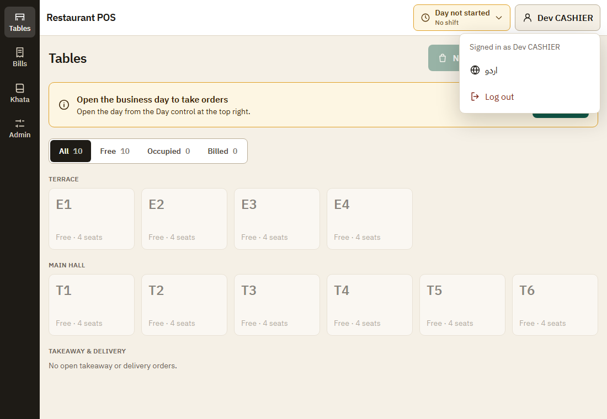
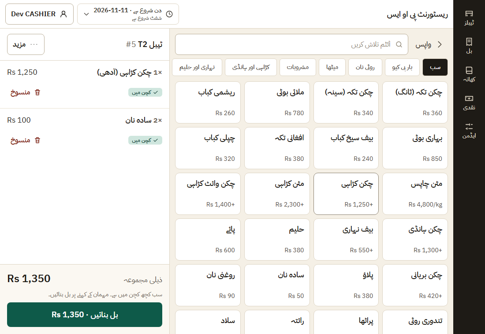
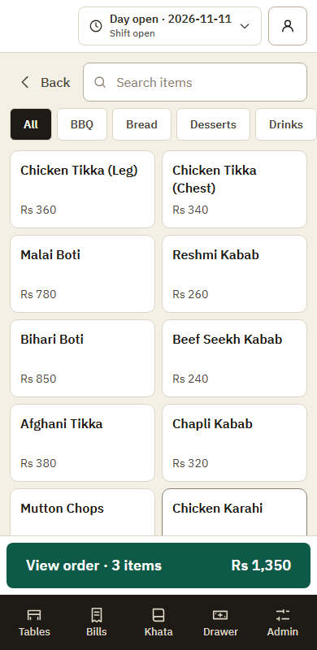
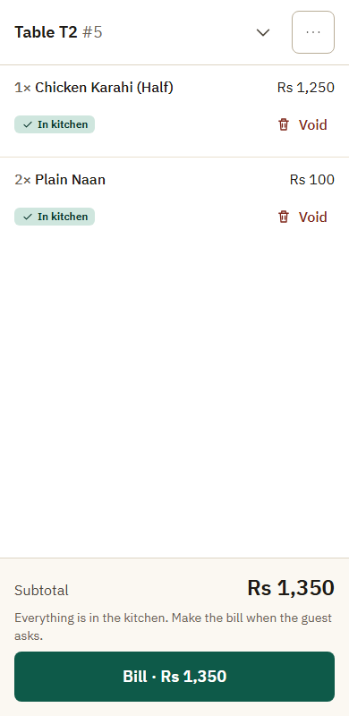
Buttons are large enough for a finger. The same system works on a tablet at the counter, a phone in a waiter's hand, or a PC at the cashier.
Built-in safety
| Rule | What it means for you |
|---|---|
| No deleting history | Payments, stock movements, khata entries and the audit log can only be added to. The database itself refuses edits and deletes. |
| Paid bills are final | Corrections are credit notes that sit next to the original. |
| Everything sensitive is logged | Discounts, voids after the kitchen, refunds, reprints, no-sale drawer opens and shift reopens record who, when and why. |
| Approval by a second person | Large discounts need a manager's PIN, and the limit depends on the role. |
| Works without internet | Orders, kitchen tickets, bills and payment run on the restaurant network. Only online reporting needs the internet, and it waits and retries. |
| One change at a time | If two devices change the same order together, the second is told it was updated and the screen reloads, so nothing is lost. |
Before opening day: checklist
- Restaurant name, address and phone entered; receipt language chosen.
- Menu imported or entered, with Urdu names, kitchen stations and prices for each channel; a few dishes tested at the till.
- Areas and tables created to match the floor.
- Printers added, test page printed, every kitchen station mapped to a printer.
- Staff created with their own PIN; roles checked; the discount limit set.
- Payment methods checked (cash, card, wallets); a test bill paid and refunded.
- Cashiers practised: open shift, order, bill, split payment, drawer paid-out, close shift with a count.
- Tax: left off, or set up with your accountant who confirms each rate.
- If stock is used: ingredients, opening stock, recipes for the main dishes.
Not built yet
These are planned and not part of the system today:
- Delivery management: riders, delivery addresses, cash on delivery settlement.
- WhatsApp order and receipt messages.
- Advance orders and large-party (dawat) bookings with advance payments.
- A4 invoices for company customers.
- Export to an accounting package.
- The live connection to the tax authority (see Fiscal reporting).
Common questions
The internet is down. Can we keep selling?
Yes. Taking orders, printing kitchen tickets, billing and payment use only your local network. Online fiscal reports wait and are sent when the internet returns.
A guest wants to change the order after the kitchen got it.
Add the new dish and send it. To remove a dish that was already sent, use Void and enter a reason. The kitchen is told.
The table does not show on the screen, or looks wrong.
Screens update by themselves within a few seconds. If a device lost its connection to the server, it reconnects and refreshes on its own.
Someone entered a wrong amount.
Before payment, remove the payment line and enter it again. After payment, ask a manager to refund through a credit note.
A cashier forgot to close their shift.
The manager cannot close the day while a shift is open. The cashier counts the cash and closes it first, with a note for any difference.
Can I see how much each dish costs me?
Yes, once recipes and purchases are entered. The cost report shows food cost per dish and in total.